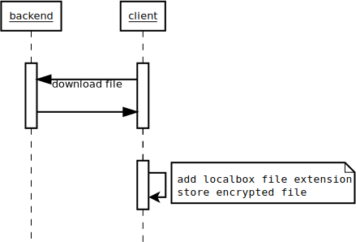
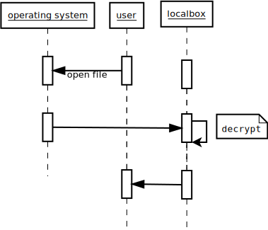
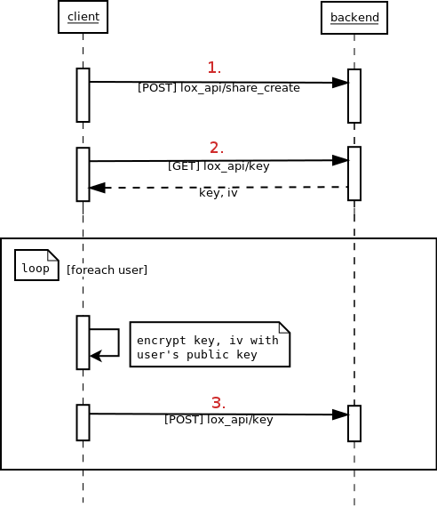

Specification¶
Client Side Encryption¶
The user’s files are download and stored encrypted on disk. Because the files eventually will be opened they have to be decrypted somehow. When the files are downloaded from the server a custom file extension (.lox) is added to the files. The .lox file extension is understood by the LocalBox client.
When the user wants to open the encrypted files, the operating system asks the LocalBox client to open them. The client decrypts them (asking for the passphrase if necessary). Once decrypted the client gives control to the operating system to open the decrypted files.
The client keeps track of all the decrypted files. Upon application exit the client will delete these files. The user has the option to delete these files at any time:

Lox extension¶
In order to open then encrypted file we have to create a new file type and register it to open with the LocalBox application.
Linux¶
- On Linux first we have to create the mime type:
sudo xdg-mime install --mode system /usr/localbox/applications/x-localbox.xml
Then set the LocalBox application as the default for this mime type:
Edit
[Default Applications]section of/etc/xdg/mimeapps.listadding:application/x-localbox=localbox.desktop
File Sharing¶
LocalBox stores an encrypted (key, iv) pair for each directory. This pair is encrypted with the user’s public key. To allow many clients for the same LocalBox, the pair is stored in the backend server. The (key, iv) pair can only be used after decrypting it with the passphrase protected private key.
In order for the file sharing to work, the key and iv for the new share must be stored for each receiver of the share.
Here’s the description of the workflow for creating a share:
- The client calls the backend service to create a new share. The service receives a JSON like so:
{ 'identities': [
{ 'type': 'user', 'username': ... },
...
]
}
- The client gets the encrypted key and iv from the server. These are used on encryption/decryption of files and it exists a pair per LocalBox directory.
- After importing the public keys [1] the client call the service to store the encrypted (key, iv) that belongs to the receiver of the share. This step runs repeatedly for each user in the receivers list.
| [1] | The public keys are obtained using the service lox_api/identities. A field called public_key is available in the response. |
After this process the receivers can synchronize the new folder and read its contents.